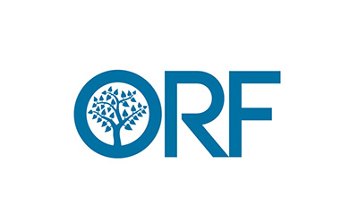
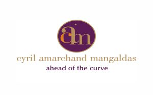
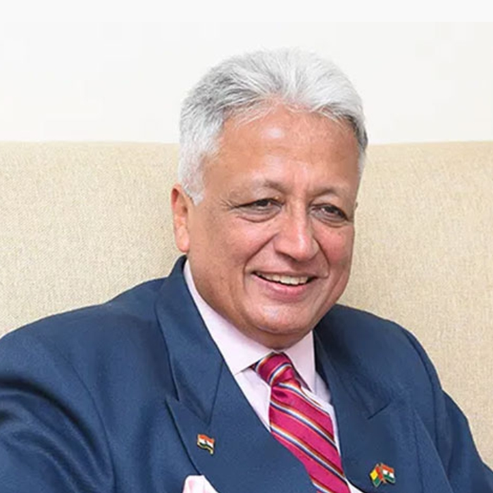
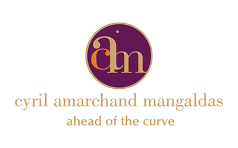

Get In Touch
Have questions about Bachelor of Commerce (Hons) CFA admissions?
Share a few details and our admissions counsellors will walk you through eligibility, fees, scholarships and the application timeline — no obligation.
- Fast Response — a counsellor calls back within 24 hours.
- One-on-One Guidance — personalised help with eligibility and documentation.
- No Obligation — ask questions before you decide to apply.
Fill this in and we'll reach out shortly.
Overview
Bachelor of Commerce (Hons) CFA
PES University's B.Com (Hons) with CFA program delivers a four-year undergraduate powerhouse blending rigorous commerce fundamentals—accounting, economics, business law, and financial principles—with the globally revered CFA curriculum, embedding investment analysis, portfolio management, ethics, and quantitative tools across eight semesters for seamless charter holder preparation. Students gain a competitive edge with early CFA Level 1, 2 and 3 readiness by graduation, and unlocking high-demand roles in investment banking, equity research, and asset management at top employers.


Eligibility
50% aggregate score in 10+2 or equivalent in any stream from a recognized board. Register @ https://admissions.pes.edu/
About the Programme
Why CFA?
Students should choose CFA for its gold-standard global recognition, accepted in 165+ countries, elevating credibility with top employers like JPMorgan and Blackrock across investment banking, asset management, and consulting.
- Career Acceleration: Opens doors to high-demand roles such as portfolio managers, equity research analysts, risk managers, and financial consultants, with faster promotions and versatility in equity, fixed income, hedge funds, and wealth management.
- Comprehensive Expertise: Delivers graduate-level mastery in investment analysis, portfolio management, ethics, financial modelling, and quantitative tools, providing a strong foundation for independent practice or launching firms.
- Superior Earnings: Charter holders command 57% higher salaries than non-holders, with Level I passers seeing 32% boosts and freshers in India earning ₹6–10 LPA, plus bonuses and stock options.
- Networking Power: Access to a vast alumni network and CFA Charter resources for global connections and ongoing professional growth.
About the Programme
Program Highlights
The B Com (Hons) with CFA is a semester pattern based elite program. It offers the following attributes:Curriculum
Curriculum Structure
The B.Com (Hons) in CFA at PES University is a comprehensive program designed to integrate the CFA qualification within the degree itself. It provides students with a strong foundation in accounting, finance, and related subjects while preparing them for global career opportunities.
100% CFA-Embedded Syllabus
The curriculum is fully aligned with the CFA’s syllabus, covering all necessary subjects and skills required to qualify as a professional accountant.
Certifications and Recognition
The qualification is internationally recognized and accepted in over 180 countries.
Career Prospects
This program opens up global career opportunities, particularly in the Big 4 firms and fields like investment banking, management, and consulting.
Key Subjects
Level-1 Papers- Asset Allocation
- Portfolio Construction
- Performance Measurement
- Derivatives and Risk Management
- Portfolio Management / Private Markets / Private Wealth
About the Programme
Program Delivery
The B.Com Hons with CFA program will cover all 3 levels of CFA across the 4 years. The Level -1 will be dealt in much detail. Level 2 and level -3 will also be taught. The entire Course curriculum will be integrated with CFA, alongside some of the quintessential subjects of finance, data analysis and data visualisation. The 8 semester program consists of 2 internships- A Social Internship with an NGO, in the 3rd semester, Audit Internship in the 6th Semester, and the final Internship in the 8th Semester. After the course, a student will earn 160 credits, which helps them apply for higher studies as well as design a sustainable career for themselves.
Proficiency for Graduates: At PES University, Commerce graduates are trained to become industry-ready, equipped to take on diversified job profiles ranging from Accounting and Costing to Taxation, Banking, Finance, Insurance, Research, and Global Professional roles. The B.Com. (Hons) with CFA aspirants, as future graduates, are expected to stay updated with global developments, achieving proficiency and training in advanced principles of International Accounting and Finance. The wide scope of opportunities invites CFA professionals to engage in crucial domains of business decision-making and corporate compliance.
How We Teach
Pedagogy Method
About the Programme
Skill Based Certification Courses
Emphasis on leading the students towards a fundamentally strong and professionally driven careers through the implementation of additional certification programmes as following:
- Advanced Excel
- Commodity Markets
- Financial Modelling
- Export & Import Documentation
- Aptitude Skill Development
- Actuarial Science
- Python
Exposure
- Workshops
- Forum activities
- Industry Visits
- NGO drive
About the Programme
Industry-Academia Tie-ups

Careers
Career options
Commerce graduates from PES University are trained in such a way that they are industry ready to perform variety of jobs such as Investment Banker, Tax Consultants, Wealth Managers, Risk and Security Analysts, Market Analyst, Banking and Insurance, Researcher and Policy Maker.
The graduating students would be equipped with knowledge, tools, methods, theories, and practices of Commerce profession and trained to apply them in day-to-day life industry and other walks of life to optimize the outcomes. The Commerce graduates may opt for the following career opportunities in various fields if they clear CFA.
Curriculum
Curriculum Structure
- Quantitative Methods
- Financial Statement Analysis
- Corporate Issuers
- Data Analysis and Interpretation
- Ethical and Professional Standards
- Constitution of India, Cyber law and Professional Ethics
- Direct Tax
- Equity Investments
- Fixed Income
- Derivatives
- Economics
- Environmental Studies and Life Sciences
- Alternative Investments
- Portfolio Management
- Advance Corporate Issuers
- Advance Quantitative Methods
- Essentials of innovation & Entrepreneurship- 1
- Social Internship
- Advance Equity Investment
- Advance Financial Statement Analysis
- Applied Economics
- Advanved Fixed income
- Advance Derivatives
- Essentials of innovation & Entrepreneurship- II
- Advance Alternative investments
- Advanced portfolio management
- Ethical and Professional Standards- 2
- Portfolio Construction
- Performance Measurement
- Data Visualization
- Derivatives and Risk Management
- Ethical and Professional Standards- 3
- Research Methodology
- Internship & Project
- Asset Allocation
- (Portfolio Management or Private Markets or Private Wealth)
- Business Law
- Internship
- Project
*Subject to change.
Placements
Placement Opportunities & Career Assistance
Placements have always been the USP of PES University. Professional placement assistance will be provided through the centralised placement cell of the university.
In addition, the following will be extended to all our B.Com Hons. With CFA students :
- Resume building & workshops: Career assistance includes workshops on resume building, interview skills, and effective communication, preparing students for the competitive job market.
- Mock Interviews: The University conducts mock interview sessions to help students gain confidence and polish their interview techniques. Feedback from industry experts is provided to help students refine their skills.
- Leverage of our Alumni Network: Graduates benefit from a strong and active alumni network that provides mentorship, networking opportunities, and insights into various career paths. Alumni often play a pivotal role in connecting current students with employment opportunities.
- CFA Exam Support: Recognising the significance of the CFA qualification, the university offers dedicated support for CFA exam preparation, including study materials, practice exams, and guidance from experienced faculty.
- Internship Opportunities: The University facilitates internships with leading organisations, allowing students to gain practical experience, apply classroom knowledge, and establish connections within the industry.
- Career Counselling: The University offers personalised career counselling services to help students identify their strengths, interests, and career goals. This guidance assists students in making informed decisions about their professional journeys
Careers
Potential Recruiters




Financial Support
Merit scholarships, awarded on performance
Over ₹140 crores in merit scholarships have been given to PES University students since 2014.
Merit Scholarships
Awarded on CGPA / SGPAProf. MRD Scholarships
Merit Certificate + 50% Tuition Fee Refund for Top 5% of the Students based on their CGPA.
Prof. CNR Rao Scholarships
Merit Certificate + 40% Tuition Fee Refund for the next 20% of the Students based on their SGPA.
Distinction Awards
Merit Certificate for Students securing 7.75+ SGPA.
PES Loyalty Program
Awarded on family / institutional ties, every year of studyPES Employees
Children of full-time staff, 5+ years employment.
PES Institution Students
Graduates of any PES institution or sister concern.
Siblings of Students
Siblings of currently enrolled PES students.
Alumni Family
Siblings and children of PES University alumni.
University Highlights
Recognition beyond the programme
The accreditations and rankings behind PES University as a whole.
University in Karnataka
Among new universities under 5 years, ranked by KSURF.
NAAC Accredited
PES University holds NAAC's top-grade accreditation nationally.
B-School in Karnataka
Times of India B-School Rankings, 2021.
Most Preferred B-School
Second only to IIM Bangalore among B-School aspirants, per Times of India.